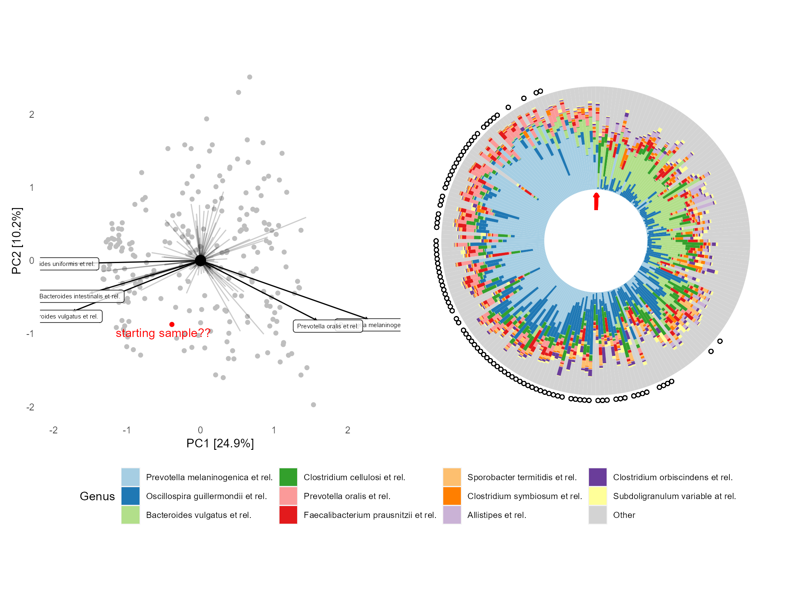

vignettes/PCA-sorted-polar-composition-plots.Rmd
PCA-sorted-polar-composition-plots.RmdObjective = Circular composition plot with order corresponding to ordering on PCA axes 1 and 2?
circular <-
microViz::plot_comp_bar(
ps = dietswap,
tax_level = "Genus", n_taxa = 11,
order_samples_with_all_taxa = TRUE,
seriate_method = "PCA_angle",
tax_transform_for_ordering = "clr",
bar_outline_colour = NA,
drop_unused_vars = FALSE
)
#> Registered S3 method overwritten by 'seriation':
#> method from
#> reorder.hclust vegan
circular <- circular +
coord_polar(clip = "off") +
theme(
axis.title = element_blank(),
axis.text = element_blank(),
axis.ticks = element_blank(),
legend.text = element_text(size = 8)
) +
# arrow pointing at starting sample (showing it is lowest level of factor)
geom_segment(
data = ~ dplyr::filter(., SAMPLE == levels(SAMPLE)[[1]]),
mapping = aes(xend = SAMPLE),
color = 'red', y = -0.20, yend = -0.05, size = 1.5,
arrow = arrow(length = unit(0.01, "npc")), show.legend = FALSE
) +
# points showing nationality of samples by shape
geom_point(
data = ~ dplyr::filter(., nationality == 'AFR'),
shape = 'circle open', y = 1.05, show.legend = FALSE
) +
scale_y_continuous(expand = expansion(add = c(0.5, -0.1)))Corresponding PCA plot.
pca <- dietswap %>%
tax_agg("Genus") %>%
tax_transform("clr") %>%
ordin8("PCA") %>%
plot_ordin8(plot_taxa = 1:5, taxon_label_length = 0.5, colour = "grey", auto_title = FALSE) +
geom_point(x = 0, y = 0, size = 4, shape = "circle", colour = "black") +
theme(panel.grid = element_blank()) +
geom_point(data = ~ dplyr::filter(., sample == "Sample-181"), color = "red") +
ggrepel::geom_text_repel(data = ~ dplyr::filter(., sample == "Sample-181"), color = "red", label = "starting sample??")
#> Warning: Ignoring unknown parameters: taxon_label_length
pca + circular + plot_layout(ncol = 2, guides = "collect") &
theme(legend.position = "bottom", legend.direction = "horizontal")